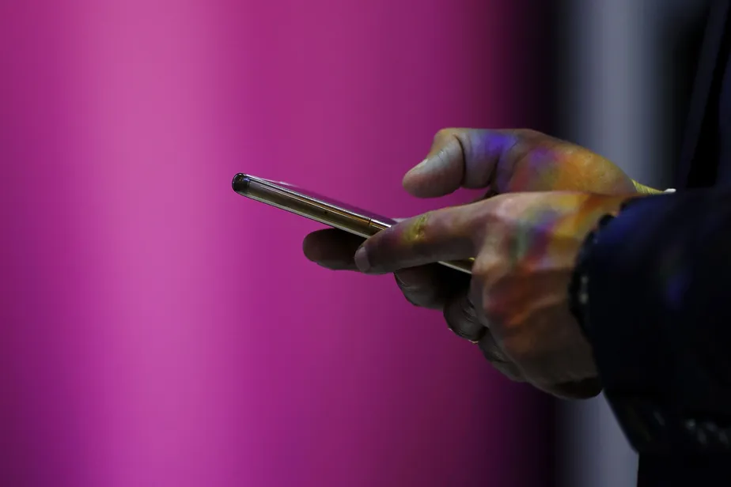

China busca vantagem na corrida pelos padrões 6G
A feira comercial MWC Shanghai, que começou na quarta-feira, mostra os avanços em tecnologia móvel da Huawei e outras empresas de telecomunicações chinesas. O país se prepara para tomar a iniciativa de estabelecer os padrões celulares 6G. A implantação comercial do 5G criou um apetite crescente por mais inovações, disse Meng Wanzhou, diretor financeiro da Huawei Technologies e presidente rotativo, em um discurso no evento, a maior exposição de tecnologia móvel da Ásia. A exibição da Huawei no MWC se concentra fortemente na tecnologia 5.5G – uma etapa de transição entre 5G e 6G, também chamada de “Beyond 5G” ou “5G Advanced”, que a empresa está se preparando para trazer ao mercado no segundo semestre de 2024. Ele diz que o 5.5G oferecerá uma melhoria dez vezes maior no desempenho da rede em relação ao 5G padrão, permitindo dispositivos de Internet das Coisas mais rápidos, fábricas e sistemas de transporte mais eficientes e criação de conteúdo 3D. A MWC Shanghai já havia destacado smartphones com designs e recursos inovadores, mas a pandemia e o esfriamento do mercado de celulares fez a feira perder ímpeto. Este ano está havendo uma mudança de foco, com mais atenção nos aplicativos 5G e nas próximas etapas da tecnologia sem fio. A China Mobile está empenhada na implantação do 5G e avançará com a pesquisa e o desenvolvimento do 6G de vários ângulos, disse o presidente Yang Jie no evento. A estatal de telecomunicações apresentou um sistema para operação eficiente de drones com tecnologia 6G. A China é um destaque global no alcance de sua rede 5G. O país tinha 634 milhões de usuários 5G e mais de 2,73 milhões de estações base no fim de abril, cada uma representando cerca de 60% do total global, de acordo com o Ministério da Indústria e Tecnologia da Informação.
A China lançou inicialmente o serviço 5G seis meses depois dos Estados Unidos e da Coreia do Sul, em novembro de 2019. Mas o governo tornou a tecnologia um elemento central de sua iniciativa de modernização industrial "Made in China 2025", alimentando um grande impulso de implantação público-privada que gerou uma expansão muito mais rápida do que em outros países. Os gastos com redes 5G totalizaram quase 600 bilhões de yuans (US$ 83 bilhões) até o fim de abril, segundo o ministério. A China Mobile diz que seu investimento atingiu o pico em 2022 e, desde então, entrou em um período mais estável. O uso industrial do 5G está crescendo, principalmente para operações remotas que economizam trabalho em fábricas, portos e minas. A tecnologia já viu mais de 50 mil aplicações industriais até agora, de acordo com o governo. A Huawei está se concentrando no 5.5G em antecipação a essa mudança digital, expandindo ainda mais em uma ampla gama de campos. Espera-se que os padrões internacionais para 6G sejam definidos por volta de 2030, com o início do uso comercial a partir daí. A Huawei provavelmente pretende construir um histórico com 5.5G agora para colocá-la em uma posição mais forte para influenciar esse processo. Mas os players chineses enfrentam um ambiente difícil fora de seu mercado doméstico. Os Estados Unidos vetaram as empresas chinesas em suas redes 5G por questões de segurança, e a Austrália e o Japão essencialmente fizeram o mesmo. De acordo com a S&P Global, a Ericsson e a Nokia são os principais fornecedores de sistemas 5G em todo o mundo, com mais de 200 lançamentos comerciais e testes entre dezembro de 2017 e junho de 2022, em comparação com 79 da Huawei e 51 da compatriota ZTE. As empresas chinesas exploraram regiões onde a influência dos Estados Unidos é mais fraca, como África, Oriente Médio e Sudeste Asiático, mas seu ímpeto diminuiu ultimamente.
Autor(a): Manoel Garcia
Data de Publicação: 01 de julho de 2023